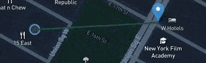

Setup
Explanations
The louder the sound, the faster the pulse.
Quieter

Louder
Move the marker around the map to experience different sounds

The line connecting your marker to the sensor shows the relative sound volume.
Yellow: relative volume is higher.
Green: relative volume is lower.
No line: this sensor isn't playing.
